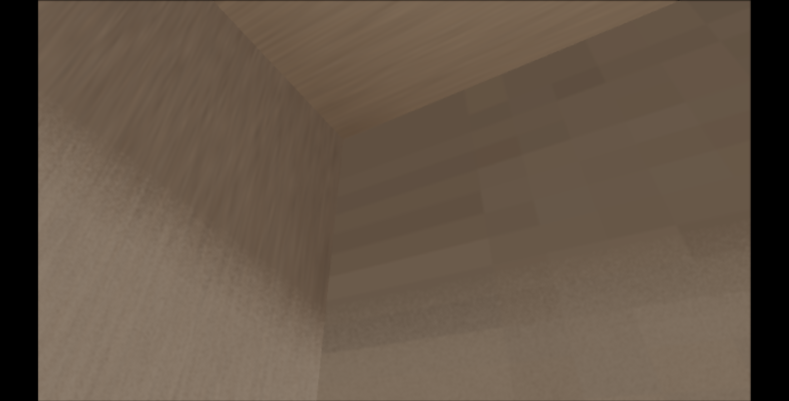
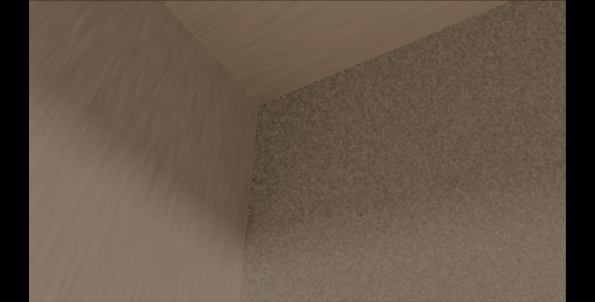
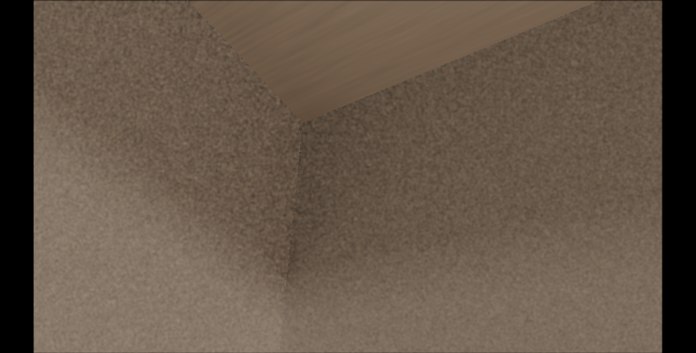
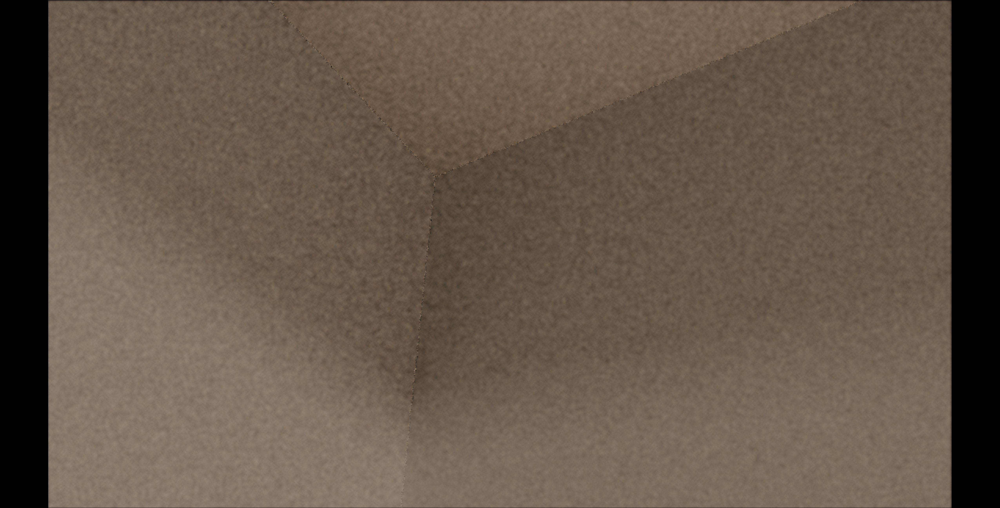
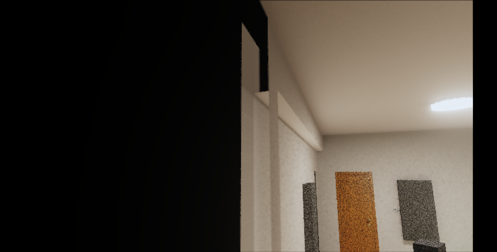
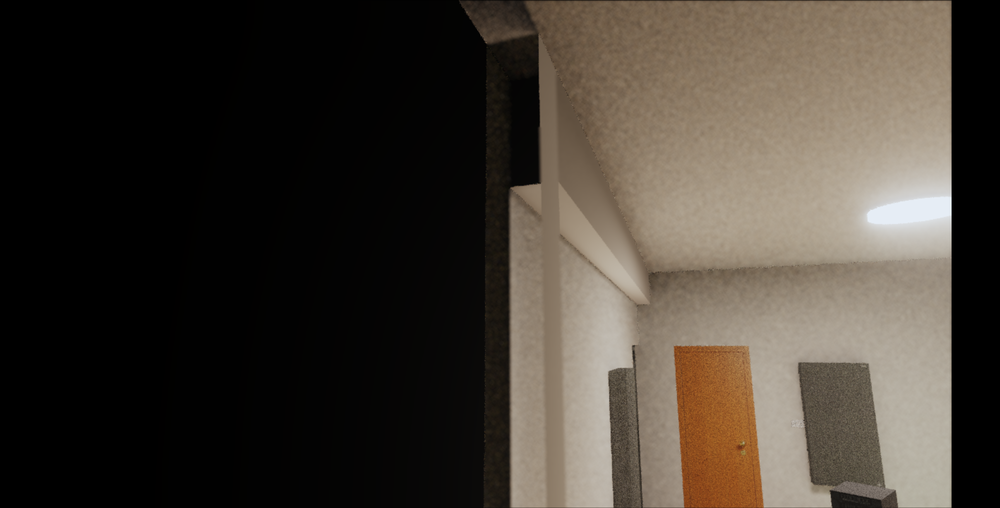

R7-3.10 西牆與東牆邊界馬賽克 Debug 地圖
目的
這份頁面是後續 debug 地圖。它只整理目前共識、使用者回報、兩組 cameraState、重現截圖、正常目標、待查路線。此頁不代表已經開始修 renderer。
核心共識：修完後黑邊、縫隙、拉長馬賽克都要消失；柱面在應該可見時要正常顯示；牆邊只允許自然陰影與材質紋理，不能留下補洞痕跡。
共識原文
1. 西牆邊邊的正常樣子
西牆靠西南柱的交界可以有接觸陰影、角落暗度、材質自然變化。
但不能出現一格一格被水平或垂直拉長的馬賽克。
也不能像把牆面末端某幾個 texel 複製成一大片條紋。
2. 西南柱的正常樣子
從南方室外往北看，如果視線能看到西南柱的南面或北面，
這兩個柱面就應該正常顯示柱子的材質與光影。
智慧透視可以讓阻擋視線的大牆透明，但不能把應該可見的柱面一起藏掉。
3. 烘焙取樣的正常規則
牆面邊界附近如果沒有有效 atlas texel，應該轉交給正確的相鄰面、
dedicated hybrid 面，或回到 live 光追。
不能用「最後一格有效像素」硬拉過整段邊界。
你看到的拉長馬賽克，很像這類 clamp / guard-fill / ownership 補洞造成的副作用。
4. 東牆對稱位置的正常樣子
東牆對稱位置要套同一個標準。
牆邊可以有自然暗角，但不能有被拉長的方塊紋。
若東牆與東南柱交界也有同樣紋路，就代表這不是單一西牆貼圖瑕疵，
而是牆邊 ownership 或 atlas 邊界處理的共同問題。
5. 我接下來會查的根因方向
第一優先查西牆 / 東牆邊界的 runtime route：
這些像素到底命中 full wall、beam-shadow overlay、column face、structural slot，
還是掉到某個 guard texel。
第二優先查智慧透視：
南方室外視角下，西南柱南面與北面為什麼被隱藏。
這可能讓原本被柱面遮住的錯誤牆邊取樣暴露出來。
第三優先查之前修縫隙的補 texel 邏輯：
如果當時把西牆南端或東牆對稱端用鄰近 texel 延伸，
那就符合你說的「黑邊沒了，但馬賽克被拉長」。使用者回報
目前西牆與西南柱交界已經沒有黑邊與縫隙，但西牆邊緣出現馬賽克被拉長的視覺。南方室外往北看的視角中，西南柱南面與北面被智慧透視隱藏，因而暴露出西南柱左側那面附近的同類拉長馬賽克。
使用者推測：之前為了修縫隙，可能把西牆南端的有效 texel 直接拉長補洞，造成像素被延展。東牆對稱位置也有類似問題。
CODEX 目前判讀：這個問題需要同時查牆邊 atlas 取樣、相鄰面 ownership、guard-fill / clamp 補洞策略，以及智慧透視對西南柱南面與北面的隱藏判斷。
正常目標定義
西牆邊緣
西牆靠西南柱的交界可以有接觸陰影、角落暗度、材質自然變化。它不能出現一格一格被水平或垂直拉長的馬賽克，也不能像把牆面末端某幾個 texel 複製成一大片條紋。
西南柱
從南方室外往北看，如果視線能看到西南柱的南面或北面，這兩個柱面就應該正常顯示柱子的材質與光影。智慧透視可以讓阻擋視線的大牆透明，但不能把應該可見的柱面一起藏掉。
烘焙取樣
牆面邊界附近如果沒有有效 atlas texel，應該轉交給正確的相鄰面、dedicated hybrid 面，或回到 live 光追。它不能用最後一格有效像素硬拉過整段邊界。
東牆對稱位置
東牆對稱位置要套同一個標準。牆邊可以有自然暗角，但不能有被拉長的方塊紋。若東牆與東南柱交界也有同樣紋路，代表這是牆邊 ownership 或 atlas 邊界處理的共同問題。
證據 A：西牆與西南柱交界近距離
使用者提供 cameraState，CODEX 以本機 diagnostic helper 重現。重現 package：.omc/r7-3-10-west-wall-mosaic-diagnostic/20260521-030029/。
cameraState={"position":{"x":-1.877334,"y":2.484875,"z":2.819378},"yaw":2.0756,"pitch":0.611,"fov":55,"forward":{"x":-0.716911,"y":0.573687,"z":0.396134}}
forward={"x":-0.716911,"y":0.573687,"z":0.396134}
view={"facing":"西(-X)","config":1,"samples":1,"paused":true,"sppCap":1000}
viewport={"innerWidth":1458,"innerHeight":741,"canvasCssWidth":1318,"canvasCssHeight":741,"drawingBufferWidth":1280,"drawingBufferHeight":720,"devicePixelRatio":3.5,"aspect":1.777778}All ON
目標現象：西牆邊緣與西南柱交界附近有拉長馬賽克感。

關閉 west wall full
用來判斷問題是否來自主西牆 full bake。

West special only
用來判斷 dedicated west / southwest column hybrid targets 是否仍能重現拉長馬賽克。

All OFF live
用來分辨 live 幾何 / 材質本身與烘焙取樣補洞痕跡。

證據 B：南方室外往北看入房間
使用者提供第二組 cameraState，CODEX 以本機 diagnostic helper 重現。重現 package：.omc/r7-3-10-west-wall-mosaic-diagnostic/20260521-030204/。
cameraState={"position":{"x":-1.419464,"y":2.018216,"z":4.273416},"yaw":0.3536,"pitch":0.187,"fov":55,"forward":{"x":-0.34024,"y":0.185912,"z":-0.921777}}
forward={"x":-0.34024,"y":0.185912,"z":-0.921777}
view={"facing":"北(-Z)","config":1,"samples":1,"paused":true,"sppCap":1000}
viewport={"innerWidth":1458,"innerHeight":741,"canvasCssWidth":1318,"canvasCssHeight":741,"drawingBufferWidth":1280,"drawingBufferHeight":720,"devicePixelRatio":3.5,"aspect":1.777778}All ON
目標現象：西南柱南面與北面被智慧透視隱藏，並露出後方牆邊拉長馬賽克區。

All OFF live
用來判斷柱面消失是否與烘焙 runtime 開關直接相關。
Only structural
用來隔離西南柱與樑柱相關 target 是否會單獨暴露可疑區域。

待查假說
H1：牆邊 guard-fill / clamp 補洞拉長 texel
現象符合「為了消黑邊或縫隙，把邊界附近的有效 texel 延伸到無效區」的副作用。要查西牆南端與東牆對稱端的 atlas fill 函式、invalid texel region、runtime UV clamp。
H2：牆面 ownership 沒有正確轉交相鄰柱面
牆邊像素可能仍由 full wall 或 beam-shadow overlay 接管，卻應該轉交西南柱 / 東南柱 dedicated hybrid target。要用 probe 確認可疑像素命中的 targetId、surfaceName、route。
H3：智慧透視隱藏柱面範圍過大
南方室外視角下，西南柱南面與北面被隱藏。要查 transparency / cutaway 判斷是否只看 face normal、wall-side、camera-facing，導致柱面被誤判為應隱藏。
H4：東西牆對稱邊界共用同類規則
東牆對稱位置也有拉長馬賽克，代表修正需要抽出共通邊界規則，避免只補西牆後讓東牆保留同一類 bug。
後續 debug 路線
- 用兩組 cameraState 重跑 probe，記錄可疑像素的 targetId、surfaceName、routeKind、UV、texel 座標。
- 對比 all-on、no-west-wall-full、west-special-only、all-off-live，先找出拉長馬賽克來自哪個 runtime slot。
- 檢查西牆南端、東牆對稱端、柱面交界的 atlas guard-fill 與 invalid texel 補值。
- 檢查智慧透視 cutaway 對西南柱南面與北面的 visibility 判斷。
- 修正前先補一個同 cameraState 的回歸測試，成功標準同本頁「正常目標定義」。
目前不可走歪的邊界
這次不能只把黑邊或縫隙壓掉。畫面要回到自然牆面與柱面交界：材質紋理連續、陰影自然、沒有條紋化補洞痕跡。若智慧透視造成柱面消失，需把透明規則修準，不應讓錯誤牆面取樣變成可見替代面。